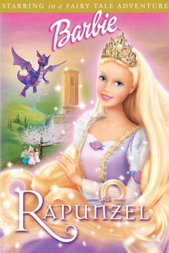

1

Filme da Barbie Escola de Princesas
É o filme que eu mais me identifiquei e que mais gosto da Barbie
Assista aqui2

Filme da Barbie Segredo das Fadas
É meu segundo filme favorito da Barbie, gosto muito da história
Assista aqui3

Filme da Barbie E As Sapatilhas Mágicas
Um dos filmes que mais marcou minha infância e que me inspirou a ser bailarina
Assista aqui4

Filme da Barbie e As Doze Princesas Bailarinas
Meu segundo filme favorito de bailarinas da Barbie
Assista aqui5

Filme da Barbie Rapunzel
Também um filme que marcou muito a minha infância e que eu gosto muito
Assista aqui